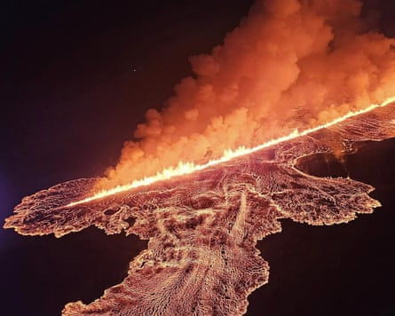

The melting of glaciers and ice caps by the climate crisis could unleash a barrage of explosive volcanic eruptions, a study suggests.
The loss of ice releases the pressure on underground magma chambers and makes eruptions more likely. This process has been seen in Iceland, an unusual island that sits on a mid-ocean tectonic plate boundary. But the research in Chile is one of the first studies to show a surge in volcanism on a continent in the past, after the last ice age ended.
Global heating caused by the burning of fossil fuels is now melting ice caps and glaciers across the world. The biggest risk of a resurgence of volcanic eruptions is in west Antarctica, the researchers said, where at least 100 volcanoes lie under the thick ice. This ice is very likely to be lost in the coming decades and centuries as the world warms.
Volcanic eruptions can cool the planet temporarily by shooting sunlight-reflecting particles into the atmosphere. However, sustained eruptions would pump significant greenhouse gases into the atmosphere, including carbon dioxide and methane. This would further heat the planet and potentially create a vicious circle, in which rising temperatures melt ice that leads to further eruptions and more global heating.
Pablo Moreno-Yaeger, at the University of Wisconsin-Madison, US, who led the research, said: “As glaciers retreat due to climate change, our findings suggest these volcanoes go on to erupt more frequently and more explosively.”
The research, which was presented at the Goldschmidt geochemistry conference in Prague, and is in the final stages of review with an academic journal, involved camping high in the Andes, among active and dormant volcanoes.
Detailed work on one volcano, called Mocho-Choshuenco, used radioisotope dating to estimate the age of volcanic rocks produced before, during and after the last ice age, when the 1,500-metre-thick Patagonian ice sheet covered the area. Analysis of the minerals in the rocks also revealed the depth and temperature at which the rocks formed.
This data revealed that thick ice cover had suppressed the volume of eruptions between 26,000 and 18,000 years ago, allowing a large reservoir of magma to build up 10-15km (6.2-9.3 miles) below the surface. After the ice melted, from about 13,000 years ago, the pressure on the magma chamber was released, gasses in the liquid or molten rock expanded and explosive eruptions followed.
“We found that following deglaciation, the volcano starts to erupt way more, and also changes composition,” said Moreno-Yaeger. The composition changed as the magma melted crustal rocks while eruptions were suppressed. This made the molten rock more viscous and more explosive on eruption.
Iceland has experienced eruptions linked to the melting of its glaciers and ice caps.Photograph: Anadolu/Getty Images
“Our study suggests this phenomenon isn’t limited to Iceland, where increased volcanicity has been observed, but could also occur in Antarctica ,” he said. “Other continental regions, like parts of North America, New Zealand and Russia, also now warrant closer scientific attention.”
Previous research has shown volcanic activity increased globally by two to six times after the last ice age, but the Chilean study was one of the first to show how this happened. A similar phenomenon was reported via the analysis of rocks in eastern California in 2004.
A recent review by scientists found there had been relatively little study on how the climate crisis had been affecting volcanic activity . They said more research was “critically important” in order to be better prepared for the damage caused by volcanic eruptions to people and their livelihoods and for possible climate-volcano feedback loops that could amplify the climate crisis. For example, more extreme rainfall is also expected to increase violent explosive eruptions.